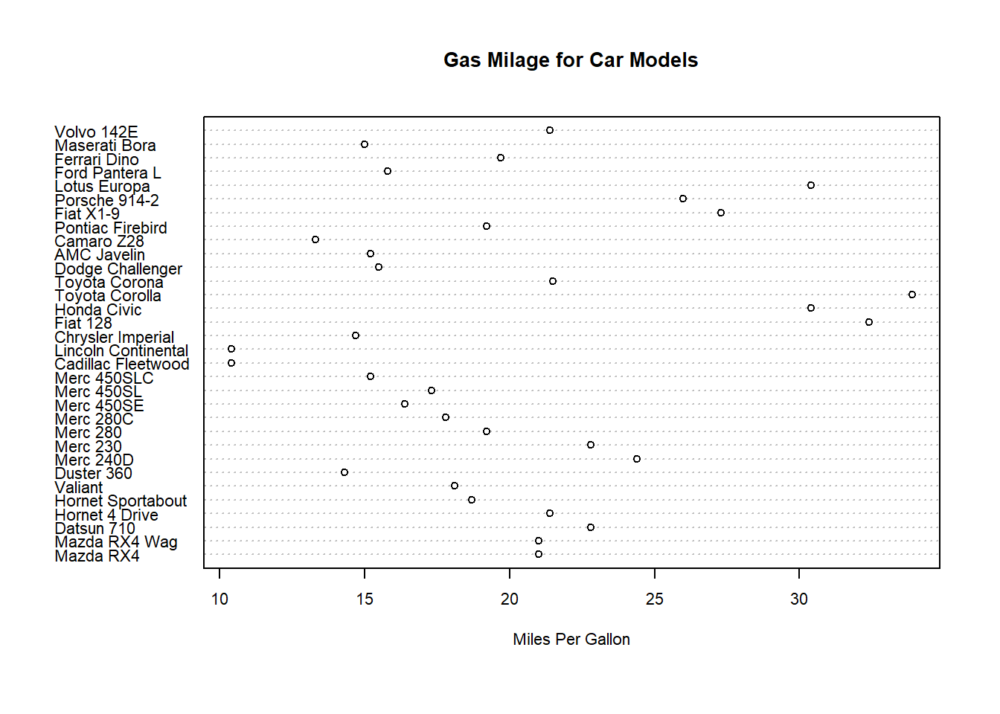

git config --global user.name 'yourGitHubUsername'
git config --global user.email 'name@provider.com'Lecture 4 Exercises
R Project
If you’re using RStudio, you have the option of creating a new R project. A project is simply a working directory designated with a .RProj file. When you open a project (using File/Open Project in RStudio or by double–clicking on the .Rproj file outside of R), the working directory will automatically be set to the directory that the .RProj file is located in.
It’s recommended to create a new R Project whenever you are starting a new research project. Once you’ve created a new R project, you should immediately create folders in the directory which will contain your R code, data files, notes, and other material relevant to your project (you can do this outside of R on your computer, or in the Files window of RStudio). For example, you could create a folder called R that contains all of your R code, a folder called data that contains all your data (etc.)
R in combination with the distributed version control system Git provides a convenient setup to make your research project reproducible. Git allows you to track and share your code and analysis.
Some reasons to use version control are:
It makes sharing of your projects easy (once it’s setup, you’ll get there)
It facilitates collaboration. People can contribute to your project and vice-versa. You can also report errors (bugs) or suggest new additions (features) to projects.
You can revert to a previous version if you find errors or accidentally deleted something.
You can see what changes between different versions of your code, analysis, or written text!
RStudio integrates support for git, hence we are going to use the widely used combination R + Git + RStudio.
Before we start
Setup Git (Only if you didn’t do it yet!)
Setup Git in RStudio.
Create a new GitHub repository.
Create a new project based on a remote Git repository.
Before we start guide
1.
Setup Git:
Configure Git and set your user name and email (the email address you used to register on GitHub). You can directly open the Git prompt from within RStudio. The user name and email need to be set only once. Go to Tools > Bash to open the Git Bash to tell Git your username and GitHub email.
2.
Setup Git in RStudio:
Open RStudio and go to Tools > Global Options… click on Git/SVN.
Check Enable version control interface for RStudio projects.
Set the path to the Git executable that you just installed. Open a shell, if you don’t know where Git is installed. Windows: type where git and hit enter. The path should be something like: C:/Program Files (x86)/Git/bin/git.exe Linux/OS X: type which git and hit enter. The path should be something like: /usr/bin/git.
Restart RStudio.
3.
Create a new GitHub repository:
Login to your GitHub account and create a new GitHub repository. Give your new repository a short and memorable name e.g. l4_ADS.
4.
Create a new project based on a remote Git repository:
Select File > New Project.. and from the opening menu select to create a new project from Version Control, Choose Git, then provide the repository url (use the https link of the url if you want to avoid all the ssh trouble) from the repository you want to clone and create the project.
Question 1
Open a new Quarto Document in Rstudio. (By default, Rmarkdown will present a sample code to show. Delete all the code in the Quarto Document.)
Insert a YAML Header with title, author and date at the top of your .qmd script.
Asnwer 1
Open new Quarto file in Rstudio by going to
File -> New File -> Quarto Document
---
title: "My first Quatro"
author: test
date: 1.1.1970
format: html
editor: visual
---Question 2
Insert a code chunk in 3 different ways.
Answer 2
‘CTRL’ + ‘ALT’ + ‘I’.
The Add Chunk command in the editor toolbar .
By typing the chunk delimiters {r} and `.
Question 3
Create a header with the following text: Quarto is cool!
Add acode chunk with the following code:
dotchart(mtcars$mpg,labels=row.names(mtcars),cex=.7,
main="Gas Milage for Car Models",
xlab="Miles Per Gallon")Answer 3
Inside a new code block write the following code:
## Quarto is cool!
dotchart(mtcars$mpg,labels=row.names(mtcars),cex=.7,
main="Gas Milage for Car Models",
xlab="Miles Per Gallon") Quarto is cool!

Question 4
What does every of the below chunk options mean?
You can apply the different options on the dot chart from the previous question.
(example: ```{r,echo=FALSE} )
A. echo=FALSE
B. echo=TRUE
C. include=FALSE
D. eval=FALSE, include=FALSE
Answer 4
# echo=FALSEThe echo gives us the option if to display code along with its results or not, in this option the code will not be shown.
# echo=TRUEThe echo gives us the option if to display code along with its results or not, in this option the code will be shown.
# include=FALSEThe include gives us the option if to include the chunk in the document after running it. in this option the chunk it will not be included.
# eval=FALSE, include=FALSEThe eval gives us the option if to evaluate the code and include its results, The include gives us the option if to include the chunk in the document after running it. In this case the the code will not be evaluated and included in the result, and also the chunk will not be in included in the document.
Question 5
A. Create a sentence with next parameters:
Your first name in italics format.
Your last name in bold.
Your id number in code format.
Link to our univercity website.
This is my example:
Jakob Alderson 123465789 BGU
Answer 5
*Jakob* **Alderson** `123465789` [BGU](https://in.bgu.ac.il/Pages/default.aspx)Question 6
Commit the changes to your git hub repository.
Push to the remote repository.
Answer 6
Commit the changes to your git hub repository
Now we commit the local changes to the local Git repository. In RStudio press the Git icon and select Commit.. from Git menu (Ctrl+Alt+M) to open the commit window to review the changes in the repository. In the Staged column we select by checking the checkbox the files we want to commit. The lower pane shows the edits in green and red of the file. Enter a commit message to indicate what has changed in this commit e.g. “First Commit”and press the Commit button.
Push to the remote repository
To push the changes to the remote GitHub repository press the Push button on the upper right corner of the commit window. You will be prompted to enter the username and password of your GitHub account. Enter them and check on the GitHub page if the changes got pushed to your online repository on GitHub.
Bonus Reading
Those who want to further expand their knowledge of all the possibilities in Quarto, are invited to read and explore the following website:
https://quarto.org/docs/authoring/markdown-basics.html